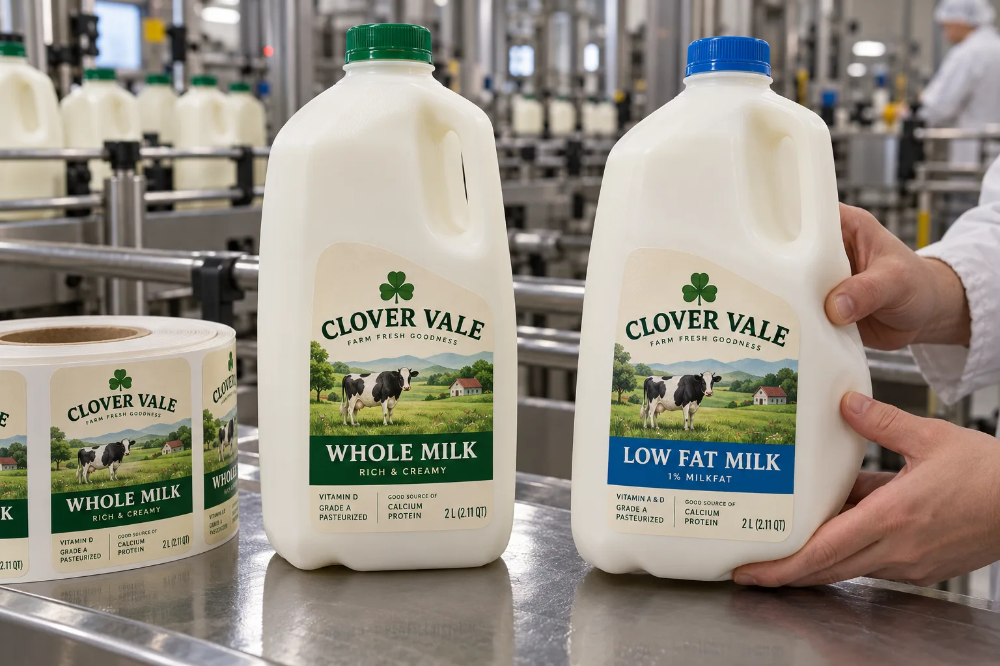

The label sees the bottle's movement
A buyer can send me a beautiful square label file and a photo of a milk jug. I still want a filled bottle. The hand grip, molded ribs and panel flex determine whether a stiff face sits cleanly or starts to resist the bottle. If the jug is squeezed during shopping or pouring, I would check that motion as part of the trial.
UPM Adhesive Materials explains why PE-based film faces are commonly considered for squeezable bottles. Its CP-Meiji case study shows one milk brand changing film thickness for 2-liter bottles. Those are examples, not proof that the thinnest film is right for every HDPE jug.
Two dairy lines, different constraints
Imagine a composite local dairy filling whole and low-fat milk into one jug mold. It may use one dieline and change the printed color and product name. I would make the words large enough that line staff do not rely on cap color alone, then check that the roll changeover matches the filled product.
A composite regional bottler receives jugs from two blow-molding suppliers. Their front panels look similar but flex differently. Here I would test printed labels on both versions before consolidating the purchase into one stock. A lower unit price loses its appeal if one supplier's bottle wrinkles the label at the handle.
Check wet use and end of life separately
Record jug temperature and dryness when the label is applied, then inspect it after refrigeration, case packing and ordinary handling. A face film that tolerates condensation after application cannot by itself guarantee good initial adhesion to a wet bottle. For environmental claims, the bottle resin and the label construction must be evaluated as a package; UPM's packaging recyclability guide distinguishes HDPE label compatibility from simple material naming.
| Trial point | What to record |
|---|---|
| Panel | Flat area, ribs, handle clearance and flex |
| Application | Dryness, bottle temperature and wipe-down pressure |
| Cold chain | Edge lift, scuff and text legibility |
| SKU control | Milk type, roll identity and cap match |
| Recycling | Market-specific full-pack guidance |
Our buying view
Buy the construction after the squeeze test
I would rather approve one slightly more conformable printed face on both filled jugs than choose a premium-looking face that only passes while the bottle is untouched on a table. The customer's hand is part of the package test.
Send a practical RFQ
- Filled jugs from each bottle supplier and mold revision.
- Panel dimensions, handle clearance and application speed.
- Refrigeration and case-packing conditions.
- Whole, low-fat and other SKU artwork matrix.
- Target market and recycling-design requirement, if any.
See HDPE and PP container labeling for the broader substrate choice, and application versus service temperature for cold-line specifications.
Frequently asked questions
Do milk jug labels need a flexible film?
The right face depends on how much the actual bottle panel flexes, how labels are applied and how the filled jug is handled. Trial the finished construction.
Can I label a wet refrigerated jug?
Do not assume a standard adhesive will establish initial tack through surface water. Record the temperature and moisture at the labeling station.
Does a recyclable jug make the whole pack recyclable?
No. Check label, adhesive, ink, coverage and local processing guidance together before making a pack-level claim.
Related buyer guides
Review your label specification
Send package photos, label dimensions, material details, quantity and application conditions. Include good and failed samples where possible so the discussion starts with evidence.